Grid Imaging and Checking¶
Inspecting images of gridded data is a valuable way of checking for unusual or undesirable artefacts in the data and several functions are provided for this purpose. The main ones are shown here. Some checks are for delivered grids, and it is also possible to generate and image grids from the located data.
This example uses delivered grids from the Canobie Falcon survey and the Vinton Dome FTG survey.
Note that only grids in the .ERS format are able to be checked.
Import the required python packages, and set the path to the Canobie geowhizz files.
from pathlib import Path
import galileoQC as qc
data_root = r'./CanobieData/'
canobieHDF_file = Path(r'./CanobieData/Canobie.hdf5')
Ideally, the delivered grids from a survey should cover the same areal extent, have the same grid cell size, the same missing data value, the same geographic datum, and so forth. The checkErsHeaders function compares this information from the first .ERS file it encounters in the given directory with all the others, performing a quick and simple check for consistency.
qc.checkErsHeaders(Path(data_root))
Found 8 .ers files ...
in: CanobieData
Comparing ERS files against FSF_GED_2p67_final.ERS.
[301, 381, 1, -1e+32, 'float32', 0, -1e+32, 'ieee-le', 'EPSG:1168', 'EPSG:7854', 'METERS']
Checking file FSF_GND_2p67_final.ERS
Checked OK.
Checking file FSF_GUV_2p67_final.ERS
Checked OK.
Checking file FSF_GDD_2p67_final.ERS
Checked OK.
Checking file FSF_GNE_2p67_final.ERS
Checked OK.
Checking file FSF_GNN_2p67_final.ERS
Checked OK.
Checking file FSF_GEE_2p67_final.ERS
Checked OK.
Checking file FSF_gD_2P67_final.ERS
Checked OK.
A single .ERS grid file can be imaged by the display_grid function. By default, this produces a shaded image.
gridfile = Path(data_root + r'FSF_GDD_2p67_final.ERS')
qc.display_grid(gridfile, "Final G_DD", cmap_norm='nonorm',
cb_ticks='stats', nSigma=2,
hs=True, azdeg=45)
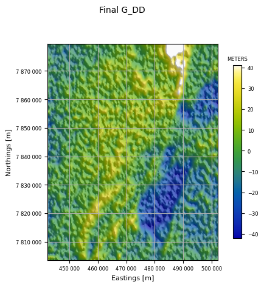
You can use any Matplotlib colormap, as well as “geosoft” and “parula”.
qc.display_grid(Path(data_root + "FSF_GDD_2p67_final.ERS"), 'Test colormaps', colormap="geosoft")
geosoft
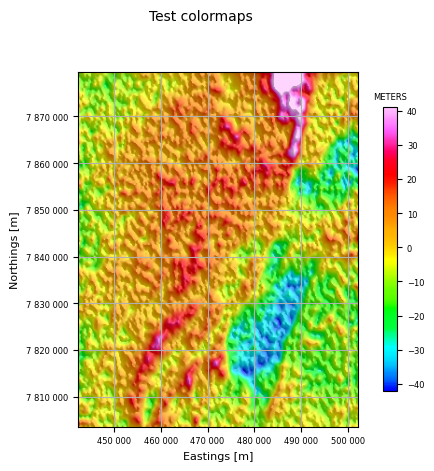
The imageAllInDir function images all .ers grids found in the given directory, using the file name as the plot title. The images use the default color look up table and are shaded. This allows a very quick check that all the grids look okay.
qc.imageAllInDir(Path(data_root))
Found 8 .ers files ...
in: CanobieData
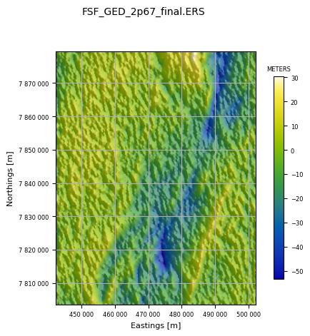
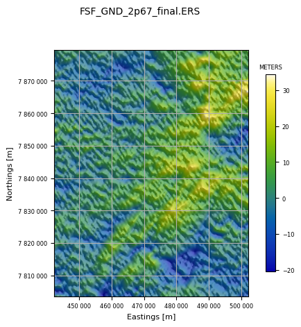
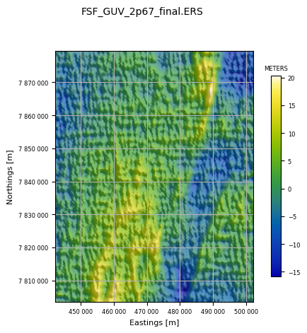
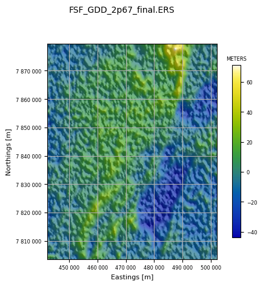
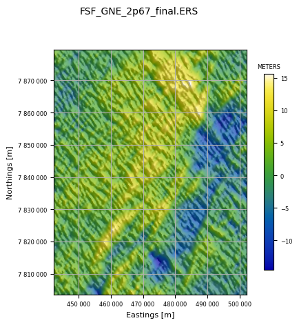
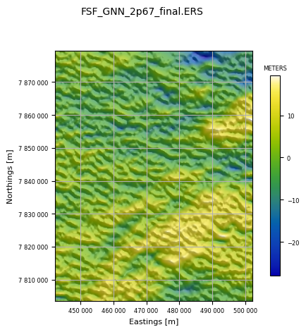
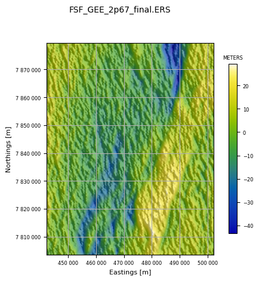
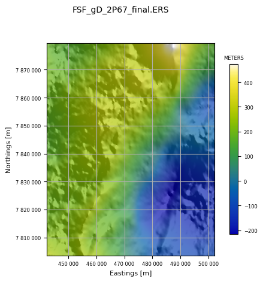
Finally, we can use grid_n_image to create grids of any channels in the database and image them for viewing.
Errors in the line number, flight number, fiducial, latitude, or any channel at all are possible and can often be easily seen in an image. Accordingly, grid_n_image is designed to interpolate every named channel to a regular grid and image the grid.
The grid interpolation can be done by the SciPy griddata linear method, or by one of the Verde methods: neighbours, bicubic, or biharmonic, or by minc (minimum curvature using the implementation in the python pygmi package). Minimum curvature is the usual choice.
Channels (for example, line number, flight number, day of year) might vary between lines but be constant along a line. Others might vary at a constant rate along a line but change dramatically between lines flown on different days or in different directions. And some might change sign depending on line direction (bearing, velocity, Eotvos correction).
Two pre-filters are provided to deal with these situations: a mean-removal filter subtracts the mean of the channel for each line from the data on that line; and a first difference filter returns the difference between successive samples for the gridding algorithm.
The gridded data are imaged on a linear colour stretch with no shading.
The Canobie located data cover a long and thin area somewhat unsuitable for imaging so we will grid and image the Vinton Dome data instead.
First, let us list the available channels. The default is to grid and image all channels in the database. For a demonstration of the key points above, we only need a few.
vintonHDF_file = Path(r'./VintonData/VintonDome.hdf5')
if not vintonHDF_file.exists():
%run ./Prepare_VintonDomeData.ipynb
qc.reportChannels(vintonHDF_file, verbose=True)
Whizz Version 1.0
28 channels:
channel units description
--------------------------------------------------
Altitude m
Cross1_raw eotvos
Cross2_raw eotvos
Cross3_raw eotvos
Drape m Planned Height
HHMMSS
Inline1_raw eotvos
Inline2_raw eotvos
Inline3_raw eotvos
Lat degree
Lon degree
TC_Txx_100 eotvos
TC_Txz_100 eotvos
TC_Tyx_100 eotvos
TC_Tyy_100 eotvos
TC_Tyz_100 eotvos
TC_Tzz_100 eotvos
Terrain m
Time s
Txx_slv eotvos
Txz_slv eotvos
Tyx_slv eotvos
Tyy_slv eotvos
Tyz_slv eotvos
Tzz_slv eotvos
X metre
Y metre
YYMMDD
Here z_chans is the list of channels to process. Those in mr_chans will have the mean value along each flight-line removed before gridding. Those in d1_chans will have the first difference along each flight-line gridded.
The first option is very useful for un-leveled data, and also for channels like heading, or velocity, which are strongly dependent on direction of flight. Here the mean removal filter is applied to Inline1_raw. These data are unleveled, and the mean removal acts to level all the data as can be seen by comparing the Inline1_raw image with the following on for the Inline2_raw channel.
The second option is very useful for data which are expected to vary uniformly with sample number. An example is the Time channel in these data. The imaged result shows the result: a completely flat image; any artefacts in the time channel would be very easily seen in this image.
z_chans = ['Inline1_raw', 'Inline2_raw', 'Tzz_slv', 'Terrain', 'Time', 'Lat']
mr_chans = ['Inline1_raw']
d1_chans = ['Time']
qc.grid_n_image(vintonHDF_file, z_chans, 200.0, mr_chans=mr_chans, d1_chans=d1_chans)
Gridding and imaging Inline1_raw
91 lines; total number of fids in whizz file = 27865.
Inline1_raw (mr): min = -72.3, max = 47.8, mean = -1.55E-15.
Processing (x, y, z) = (X, Y, MR_Inline1_raw).
MR_Inline1_raw in eotvos.
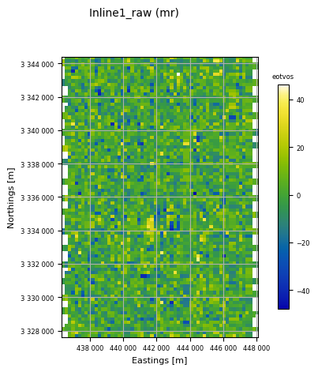
RMS of result = 10.34 eotvos
mean of result = -0.04 eotvos
min of result = -47.88 eotvos
max of result = 46.17 eotvos
Array shape = (85, 60); number of cells = 5100
exscribed rectangle:
[436298, [3327616],
[448077, [3327616],
[448077, [3344418],
[436298, [3344418]
X cell spacing = 199.647
Y cell spacing = 200.033
number of NaNs = 186
Gridding and imaging Inline2_raw
91 lines; total number of fids in whizz file = 27865.
Inline2_raw: min = -658, max = -74.8, mean = -418.
Processing (x, y, z) = (X, Y, Inline2_raw).
Inline2_raw in eotvos.
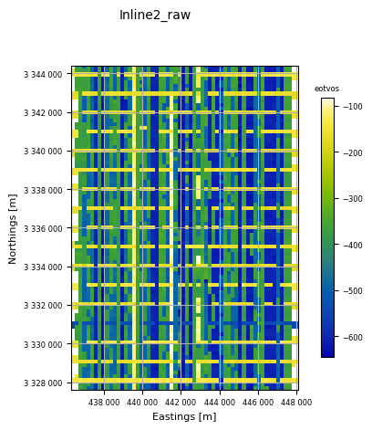
RMS of result = 161.24 eotvos
mean of result = -409.46 eotvos
min of result = -645.05 eotvos
max of result = -83.06 eotvos
Array shape = (85, 60); number of cells = 5100
exscribed rectangle:
[436298, [3327616],
[448077, [3327616],
[448077, [3344418],
[436298, [3344418]
X cell spacing = 199.647
Y cell spacing = 200.033
number of NaNs = 186
Gridding and imaging Tzz_slv
91 lines; total number of fids in whizz file = 27865.
Tzz_slv: min = -86.1, max = 79.9, mean = 0.0023.
Processing (x, y, z) = (X, Y, Tzz_slv).
Tzz_slv in eotvos.
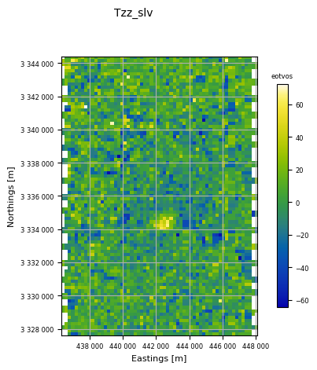
RMS of result = 15.78 eotvos
mean of result = 0.34 eotvos
min of result = -64.42 eotvos
max of result = 72.32 eotvos
Array shape = (85, 60); number of cells = 5100
exscribed rectangle:
[436298, [3327616],
[448077, [3327616],
[448077, [3344418],
[436298, [3344418]
X cell spacing = 199.647
Y cell spacing = 200.033
number of NaNs = 186
Gridding and imaging Terrain
91 lines; total number of fids in whizz file = 27865.
Terrain: min = -3.87, max = 24.4, mean = 7.34.
Processing (x, y, z) = (X, Y, Terrain).
Terrain in m.
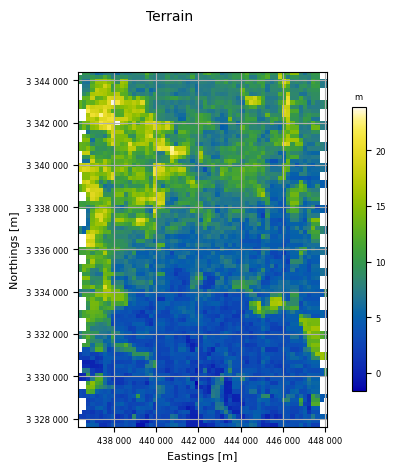
RMS of result = 4.29 m
mean of result = 7.49 m
min of result = -1.65 m
max of result = 23.91 m
Array shape = (85, 60); number of cells = 5100
exscribed rectangle:
[436298, [3327616],
[448077, [3327616],
[448077, [3344418],
[436298, [3344418]
X cell spacing = 199.647
Y cell spacing = 200.033
number of NaNs = 186
Gridding and imaging Time
91 lines; total number of fids in whizz file = 27865.
Time (d1): min = 1, max = 1, mean = 1.
Processing (x, y, z) = (X, Y, D1_Time).
D1_Time in s.
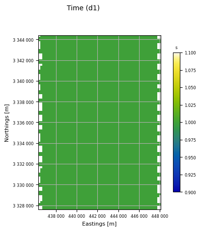
RMS of result = 0.00 s
mean of result = 1.00 s
min of result = 1.00 s
max of result = 1.00 s
Array shape = (85, 60); number of cells = 5100
exscribed rectangle:
[436298, [3327616],
[448077, [3327616],
[448077, [3344418],
[436298, [3344418]
X cell spacing = 199.647
Y cell spacing = 200.033
number of NaNs = 186
Gridding and imaging Lat
91 lines; total number of fids in whizz file = 27865.
Lat: min = 30.1, max = 30.2, mean = 30.2.
Processing (x, y, z) = (X, Y, Lat).
Lat in degree.
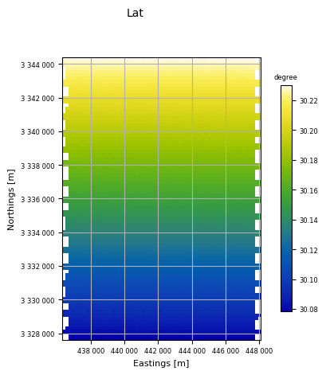
RMS of result = 0.04 degree
mean of result = 30.15 degree
min of result = 30.08 degree
max of result = 30.23 degree
Array shape = (85, 60); number of cells = 5100
exscribed rectangle:
[436298, [3327616],
[448077, [3327616],
[448077, [3344418],
[436298, [3344418]
X cell spacing = 199.647
Y cell spacing = 200.033
number of NaNs = 186
z_chans = ['Terrain']
qc.grid_n_image(vintonHDF_file, z_chans, 200.0)
Gridding and imaging Terrain
91 lines; total number of fids in whizz file = 27865.
Terrain: min = -3.87, max = 24.4, mean = 7.34.
Processing (x, y, z) = (X, Y, Terrain).
Terrain in m.
RMS of result = 4.29 m
mean of result = 7.49 m
min of result = -1.65 m
max of result = 23.91 m
Array shape = (85, 60); number of cells = 5100
exscribed rectangle:
[436298, [3327616],
[448077, [3327616],
[448077, [3344418],
[436298, [3344418]
X cell spacing = 199.647
Y cell spacing = 200.033
number of NaNs = 186